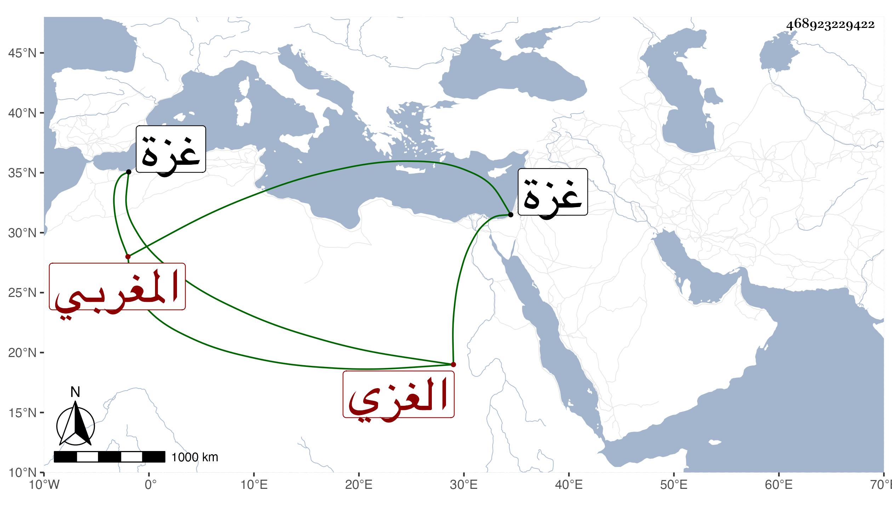

0902Sakhawi.DawLamic.ITO20230111-ara1.EIS1600.468923229422
Biography ID: 468923229422
791
علي بن عبد الحميد بن علي المغربي الأصل الغزي المولد والمنشأ . اشتغل بالنظم من البحور والفنون فأجاده وحصل له رمد قديم منعه الكتابة وهو القائل :
| سار الأحبة قلت لما ودعوا | حركت ساكن لوعتي يا بيننا |
| قالوا تمنى قبل حث ركابنا | فأجبتهم الله يجمع بيننا |
كتب عنه من نظمه في سنة ثلاث وثلاثين . ومات بغزة بعد سنة خمسين .
